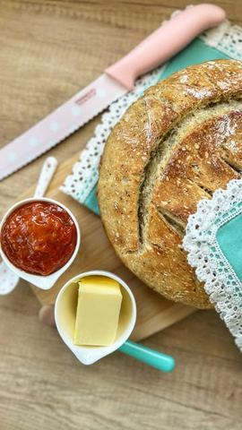

Moja beleška
Sačuvano
Ocena
Sastojci
- A ostavljam vam i recept
Priprema
Sve sastojke sipati u posudu i promešati varjačom, pa ostaviti nekih sat vremena na toplom, pokriveno krpom da testo narasta. Što se brašna tiče možete koristiti i samo belo, ja sam baš želela da isprobam i ove mešavine ☺️ Potom dobro pobrašniti podlogu i prebaciti testo koje će biti potpuno lepljivo i retko, ali tako i treba da izgleda. Preklopiti ga nekoliko puta kao na snimku, pa prebaciti u pekač koji ste prethodno zagrejali sa malo putera ili ulja. Ostaviti još nekih 20ak minuta, pa peći poklopljeno pola sata na 200C. Nakon toga skloniti poklopac i peći još 15ak minuta dok lepo ne porumeni. Kora će biti neodoljivo hrskava, a sredina meka.
Originalni opis sa Instagrama
Domaći hleb 🫶🏼 Ako nešto može da me u sekundi vrati u uspomene, da oživi momente, to je miris domaćeg pečenog hleba ❤️ Danas sam svratila do @lidlsrbija jer u ponudi imaju fenomenalno posudje od livenog gvožđa i prvo što sam zamislila u ovom pekaču je upravo hleb 🤗 A ostavljam vam i recept: •600 gr mekog belog brašna tip 400 •100 gr mešavine brašna za heljdin hleb •100 gr mešavine brašna za raženi hleb •1 suvi kvasac •kašičica šećera •2 kašičice soli •500 ml vruće vode Sve sastojke sipati u posudu i promešati varjačom, pa ostaviti nekih sat vremena na toplom, pokriveno krpom da testo narasta. Što se brašna tiče možete koristiti i samo belo, ja sam baš želela da isprobam i ove mešavine ☺️ Potom dobro pobrašniti podlogu i prebaciti testo koje će biti potpuno lepljivo i retko, ali tako i treba da izgleda. Preklopiti ga nekoliko puta kao na snimku, pa prebaciti u pekač koji ste prethodno zagrejali sa malo putera ili ulja. Ostaviti još nekih 20ak minuta, pa peći poklopljeno pola sata na 200C. Nakon toga skloniti poklopac i peći još 15ak minuta dok lepo ne porumeni. Kora će biti neodoljivo hrskava, a sredina meka. Još toplu krišku isprobajte sa malo putera i dzema, možda kajmaka.. Ili šta vi najviše volite..? Uživajte 🫶🏼 • • • #domacihleb #hleb #mirisdetinjstva #ukusnahrana #recepti #lidlsrbija